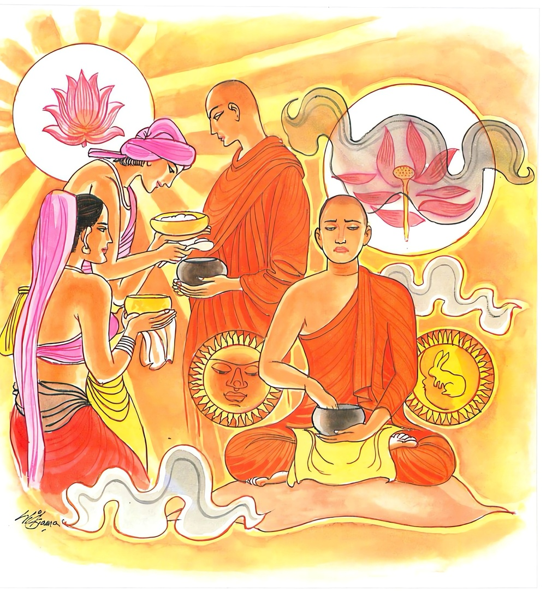
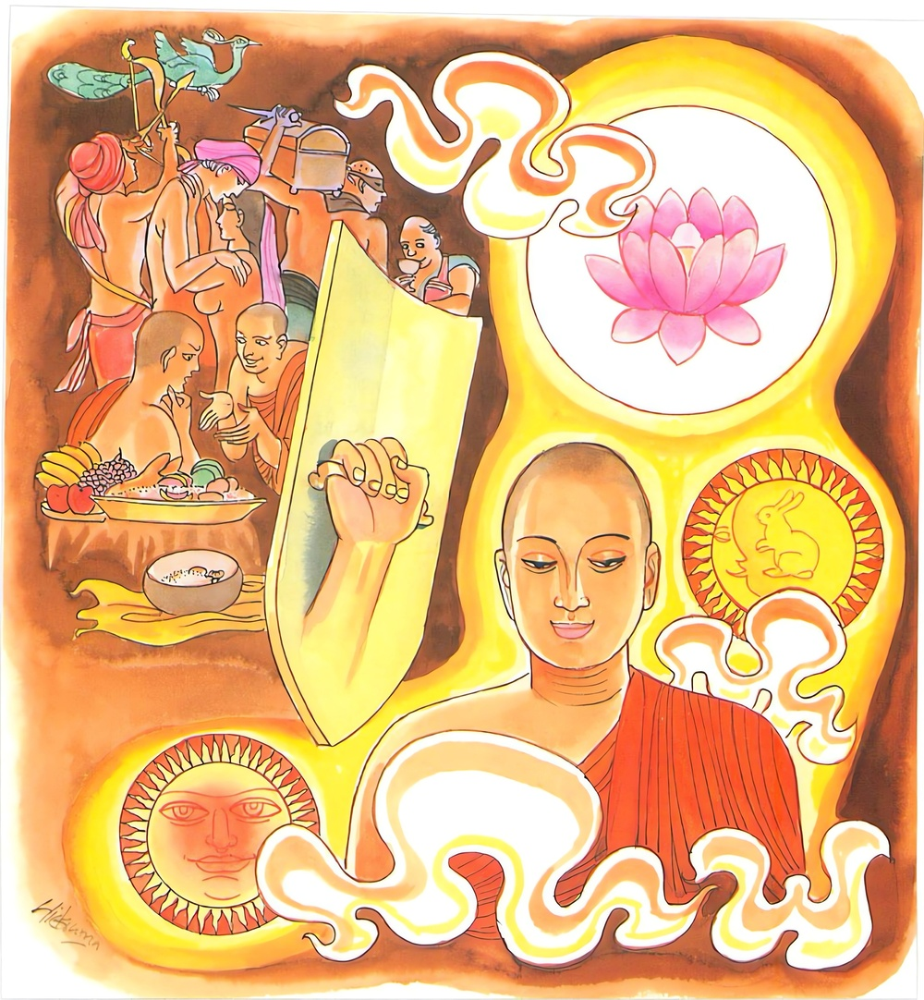

18-8 තම නෑයන් උසස් කොට දැක් වූ තිස්ස මහණ
මෙම කතාව ධම්මපද අටුවාවෙන් ද කියවන්න.
දදාති වෙ යථා සද්ධං යථා පසාදනං ජනො
තත්ථ වෙ මඞ්කු යො හොති පරෙසං පානභොජනෙ
න සො දිවා වා රත්තිං වා සමාධිං අධිගච්ඡති.
ජන තෙමේ ශ්රද්ධාවට අනුරූප පරිද්දෙන්, තමාගේ ප්රසාදයට අනුරූප පරිද්දෙන්, අනුනට දෙන්නේ ය. ඒ පානභෝජයනයෙහි යම් මහණෙක්, (රූක්ෂ දැ ලදැ යි) දොම්නස් ඇත්තේ වේ ද, හෙ තෙම ඒකාන්තයෙන් දාවලෙක වත් රාත්රියෙක වත් සමාධියකට නො පැමිණෙන්නේ ය.

යස්ස චෙතං සමුච්ඡින්නං මූලඝච්චං සමූහතං.
ස වෙ දිවා වා රත්තිං වා සමාධිං අධිගච්ඡති.
යම් මහණකු විසින් වනාහි මේ මකු බව මුලින් සිඳුනා ලද ද, (අවිද්යා තෘෂ්ණා නැමැති) ක්ලේශමූලය මොනවට නසන ලද ද, හෙ තෙම ඒකාන්තයෙන් දාවල් හෝ රෑ හෝ සමාධියට පැමිණෙන්නේ ය.

තිස්ස නම් මහණ, අනාථිපිණ්ඩික සිටානන් හා විශාඛා මහ උපාසිකාව ප්රධාන කොට ඇති පන් සියයක් පමණ අර්ය්යශ්රාවකයන්ගේ දන්දීම්වලට හා කොසොල් මහරජුගේ අසදිස මහා දානයටත් නින්දා පරිභව කරමින් හැසුරුණේ ය. උන් උන්ගේ දන්හල්හිදී සිහිල් දැයක් ලත් කල සිහිල්ය යි ද, උණුසුම් දැයක් ලත් කල කට තබන්නට නො හැකි සේ උණුසුම් ය යි ද, ටික දැයක් ලත් කල “මුන් බඩ පුරා කන්නට බොන්නට නො දෙති”යි ද, බොහෝ කොට ලත් කල “මුන්ගේ ගෙයි තබා ගන්නට ඉඩපහසු නැති බැවින් දෙති”යි ද, භික්ෂූන්ට දිය යුත්තේ යැපෙන පමණෙක් නො වේ දැ”යි ද, මෙතෙක් කැඳබත් කැවිලිපෙවිලි නිකරුණේ බැහැර දමති”යි ද නින්දා කරන්නේ ය. තම නෑයන් කිසිවක් හට කිසිවක් නො දෙතත්, “අපගේ නෑගෙවල් සිවු දිගින් වඩින්නා වූ භික ෂුන් වහන්සේලාට පැන් ලිඳක් ව සිටිති”යි කියමින් නෑයන්ට පසසන්නේ ය.
එක් ද්වාරපාලකයෙක්හුගේ පුත්ර වූ මේ තිස්ස තෙමේ දනවු සැරි සරණ වඩුවන් හා එක් ව ගොස් සැවැත් නුවරට පැමිණ එහි දී පැවිදි වූයේ ය. සෙසු භික්ෂූන් වහන්සේලා “සැදැහැයෙන් දන් දෙන උපාසක උපාසිකාවන්ට මෙසේ නින්දා පරිභව කරමින් ඇවිදුනා මොහුට නිග්රහ කළ යුතු ය”යි සිතා “ඇවැත්නි! ඔබගේ නෑයෝ කොහි වෙසෙත් දැ?යි ඇසූහ. එකල්හි තිස්ස “අසුවල් ගමෙහි වෙසෙති”යි කී ය. භික්ෂූන් වහෙන්සේලා “මොහු කීයේ ඇත්තෙක් දැ”යි සොයා බලන්නට තරුණ මහණුන් කිහිප නමක් එහි යැවූහ. එහි ගිය උන්වහන්සේලා එගම් වැස්සන් විසින් වඩා හිඳුවා සත්කාර කරණ ලදහ. ලද සත්කාර ඇති ඒ භික්ෂූන් මෙගමින් නික්ම ගොස් පැවිදි වූ තිස්ස නම් කෙනෙක් වෙත් ද? ඔහුට නෑ වූවෝ මෙහි වෙසෙත් ද? එසේ නම් ඔවුහු කවරහු”යි ඇසූ කල්හි ගම්වැස්සෝ “මෙහි කුලගෙයකින් නික්ම ගොස් පැවිදි වූ එනම් ඇතියෙක් නැත, කුමක් නිසා මුන්වහන්සේලා මෙසේ අසත් දැ”යි සිතා “ස්වාමීනි! මෙහි එක් දොරටු පල්ලකුගේ පුතෙක් වඩුවන් හා එක් ව ගොස් තැන තැන ඇවිද පසු ව පැවිදිව සිටීය යි දැන ගන්නට ලැබී ඇත, ඔහු ගැණවත් ද මේ අසන්නහු?”යි කීහ. තිස්ස මහණහුගේ වතගොත සොයා ගිය භික්ෂූන් වහන්සේලා එහි ඔහුට කිය යුතු තරම් පොහොසත් නෑ කෙනෙකුන් නැති බව දැන සැවැත් නුවරට අවුත් “ස්වාමීනි! තිස්ස නිකරුණේ නන් දොඩමින් ඇවිදී ය”යි දන්වා සිටියහ. බුදුරජානන් වහන්සේට ද භික්ෂූහු එබව සැළකළහ. එකල්හි උන්වහන්සේ “මහණෙනි! මේ තිස්ස තමන්ගේ හා නෑයන්ගේ උසස්කම කියමින් මෙසේ ඇවිදින්නේ දැන් පමණක් ම නොවේ, මෙතෙමේ පෙරත් තමන් පිළිබඳ නැති ගුණ කියමින් තමා උසස් කොට දක්වමින් හැසිරෙන්නෙක් වූයේ ය”යි වදාළ විට “ස්වාමීනි! ඒ වදාරණු මැනැවැ”යි ඇයද සිටියහ. එකල්හි බුදුරජානන් වහන්සේ,
“අන්දනවු ගිය හේ - අත්වැසුම් බස් කියනේ,
යළි අවුදු හිමි දුස්නේ - කටාහක’ බෝ විඳ ගත්”
යි මේ කටාහක ජාතකය විස්තර විසින් වදාරා “මහණෙනි! යමෙක් මඳ කොට වේව යි බොහෝ කොට වේව යි රළු කොට වේව යි පිණි කොට වේව යි දුන් කල්හි ද, අන්හට දී තමන්ට නො දුන් කල්හි ද, මකු වේ ද, මූණ හැකිළේ ද, ඔහුට ධ්යානයක් හෝ විදර්ශනාවක් හෝ මාර්ගඵලාදියක් හෝ නො උපදනා බව දනිවු”යි වදාරා මේ ධර්මදේශනාව කළ සේක.
දදාති චෙ යථා සද්ධං යථාපසාදනං ජනො,
තත්ථ චෙ මඞ්කු යො හොති පරෙසං පානභොජනෙ,
න සො දිවා වා රත්තිං වා සමාධිං අධිගච්ඡති.
.
යස්ස චෙතං සමුච්ඡින්නං මූලසච්චං සමූහතං,
ස වෙ දිවා වා රත්තිං වා සමාධිං අධිගච්ඡතිති.
ජන තෙමේ ශ්රද්ධාව වූ පරිදි ප්රසාදය වූ පරිදි එකාන්තයෙන් (යමක්) දෙන්නේ ය. යමෙක් අනුන්ගේ ආහාර පානයෙහි දොම්නස් ඇත්තේ වේ ද හෙතෙමේ එකාන්තයෙන් දහවල්හි හෝ රාත්රියෙහි හෝ සමාධියට නො පැමිණෙන්නේ ය.
යමක්හු විසින් වනාහි මේ දොම්නස මුල් සිඳ නසන ලද ද හෙතෙමේ ඒකාන්තයෙන් දහවල්හි හෝ රාත්රියෙහි හෝ සමාධියට පැමිණෙන්නේ ය.
දදාති වෙ යථාසද්ධං යථාපසාදනං ජනො = ජන තෙමේ ඇදහීම පරිදි පැහැදීම පරිදි යමක් ඒකාන්තයෙන් දෙන්නේ ය.
කම්පල අදහා දන් දෙන මිනිස්සු ඒ තමන්ගේ කම්පල ඇදහීම අනුව කම්පල ඇදහීමට අනුරූප පරිදි ඒ ඒ පුද්ලයන් කෙරෙහි පැහැද සිටි පරිදි රළු වූ අමිහිරි දැයක් හෝ පිණි වූ මිහිරි දැයක් හෝ දෙන්නේ ය.
“සද්ධාය අනුරූපං = යථාසද්ධං, පසාදනස්ස අනුරූපං = යථාපසාදනං”යි වාක්ය විසින් අරුත් ගත යුතු ය. ඇදහීමට අනුරූප පරිදි, පැහැදීමට අනුරූප පරිදි යනු අරුත්.
යොග්ගතා - විච්ඡා - පදත්ථානතිවුත්ති - සමානභාව යි යථා ශබ්දයෙහි අර්ත්ථ සතරෙක් ඇත්තේ ය. සමානභාවාර්ත්ථ හැර අන් තුන් තන්හි යථා ශබ්දය සමාස වේ. යථා යනු සද්ධා - පසාදන යන ශබ්ද දෙක හා යොග්යාර්ත්ථයෙහි සමස්තව සිටියේ ය. යථා බුඩ්ඪං යථාසත්ති යන දෙතන්හි වූයේ විප්සා - පදාර්ත්ථානතිවෘත්ති යන දෙයරුත්හි ය. “යෙ යෙ බුඩ්ඪා = යථා බුඩ්ඪං, සත්තිං අනතික්කම්ම=යථාසත්ති” යනු අර්ත්ථසමර්ත්ථනය යි. සමානාභාර්ත්ථ යෙහි යථා ශබ්දයාගේ සමාසයෙක් නැත්තේ ය. “යථා දෙව-දත්තො, තථා යඤ්ඤදත්තො” යනු එහිලා දන්නේ ය.
තත්ථ චෙ මඞ්කු යො හොති පරෙසං පානභොජනෙ =යමෙක් අනුන්ගේ ආහාර පානයෙහි එකාන්තයෙන් දොම්නස් ඇත්තේ වේ ද.
සිතෙහි හටගත් දොම්නස් ඇතියේ මඞ්කු නමි. තෙදරහිත වූයේ ද මඞ්කු යි කියනු ලැබේ. පර යනු අවස්ථානුරූපව තුන් ලිඟුවෙහි මඑන්නේ ය. පසමිතුරු - උත්තම - අන්ය - පශ්චාද්භාව යන අරුත් කියන්නේ ය. අන්යාර්ත්ථයෙහි ආවේ ලිඞ්ගත්රයයෙහි ලා දත යුතු ය. මෙහි ද අන්යාර්ත්ථය ගෙණ සිටියේ ය. “පච්චනීකොත්තමෙස්වඤ්ඤෙපච්ඡාභාවෙ පරො තිසු” යනු කෝෂාගත ය.
පානභොජන යන මෙහි පාන ශබ්දය, බීම - බඳුන - රැකීම - රකින්නාහු - දිය යන අරුත්වල වැටෙන්නේ ය. එහෙත් මෙහි ගැණෙනුයේ ජලාදිද්රවජාතීහු ය. බොනදෑ ය. භොජන ශබ්දය වැළඳීම - වළඳන බඳුන - වළඳනදැය කියන්නේ ය. ලෝ වැසි මිනිසුන් අතර නන්වැදෑරුම් කන බොන දැය ඇත්තේ ය. ඒ හැම; පානභෝජන යන මෙහි ඇතුළත් ය.
න සො දිවා වා රත්තිං වා සමාධිං අධිගච්ඡති = හෙතෙමේ එකාන්තයෙන් දහවල්හි හෝ රාත්රියෙහි හෝ සමාධියට නො පැමිණෙන්නේ ය.
දිවා යනු හා රත්ති යනු හා කාලාර්ත්ථවාචක ය. දිවා යනු අව්යයෙකි. රත්ති යනු නාමයෙකි. [1] සමාධි යන මෙයින් උපචාර - අර්පණා - මාර්ග - ඵලසමාධීහු ගැණෙත්. එහෙයින් මෙසේ දොම්නස් වනුයේ දාවල වුව ද රෑ වුව ද උපචාර වශයනේ හෝ අපීණා වශයෙන් හෝ මාර්ග වශයෙන් හෝ ඵල වශයෙන් හෝ සිත පිළිබඳ එකඟ බවට නො පැමිණෙන්නේ ය. [2]
යස්ස ච එතං සමුච්ඡින්නං මූලඝච්චං සමූහතං = යමක්හු විසින් වනාහි මේ දොම්නස මුල් සිඳ නසන ලද නම්.
යස්ස යනු සමුච්ඡින්නං යනු බලා කතු අරුත්හි සවන විබතින් සිටියේ ය. එහෙයින් ‘යමක්හු විසිනැ’යි අරුත් දෙන ලද්දේ ය. යමකු විසින් මඞ්කුභාවය යි කියූ අකුසලය අර්හන් මාර්ගඥානයෙන් අවිද්යා - තෘෂ්ණා නම් වූ කෙලෙස් මුල් සමග සිඳ හරින ලද්දේ නම්.
පැරණි ධම්මපද සන්නයෙහි ‘එතං සමුච්ඡින්නං’ මූලඝච්චං සමූහතං’යි දෙකොටසක් කොට වෙන වෙන ම අරුත් දෙන්නේ ය. එහෙත් “මඞ්කුභාව සඞ්ඛ්යාත අකුශලය මූලඝාතනය කොට අර්හනමාර්ගඥානයෙන් නසන ලද නම්” යනු අටාවායෙහි කියන ලද්දේ ය. මේ එය: “යස්ස පුග්ගලස්ස එතං එතෙසු ඨානෙසු මඞ්කුභාවසඞ්ඛාතං අකුසලං සමුච්ඡන්නං මූලඝච්චං කත්වා අරහත්තමග්ගඤාණෙන සමූහතං” යනු.
සො වෙ දිවා වා රත්තිං වා සමාධිං අධිගච්ඡති = හෙතෙමේ එකාන්තයෙන් දහවල්හි හෝ රාත්රියෙහි හෝ සමාධියට පැමිණෙන්නේ ය.
කරුණු මෙසේ බැවින් බැවින් නුවණැතියන් විසින් දීමෙහි තමාට හයිබලයක් නො වේ නම්, දීමෙහි කැමැත්තෙක් නො වේ නම්, අනුන්ගේ දීමෙහිලා සිත් පහදවා ගැණීම් පමණකුත් කළයුතු ය. ඒ චිත්තප්රසාදමාත්රය ද සැප ලැබීමට කරුණු වන්නේ ය.
ධර්මදේශනාවගේ අවසානයෙහි බොහෝ දෙන සෝවන් ඵලාදියට පැමිණියාහු ය.
තිෂ්යදහර වස්තුව නිමි.